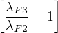

Abstract
The concept of the ‘magma series’ and the distinction between alkaline, calc-alkaline and tholeiitic trends has been a cornerstone in igneous petrology since the early 20th century, and encodes fundamental information about the redox state of divergent and convergent plate tectonic settings. We show that the ‘Bowen and Fenner trends’ that characterise the calc-alkaline and tholeiitic types of magmatic environments can be approximated by a simple logratio model based on three coupled exponential decay functions, for A = Na2O + K2O, F = FeOT and M = MgO, respectively. We use this simple natural law to define a ‘Bowen-Fenner index’ to quantify the degree to which an igneous rock belongs to either magma series. Applying our model to a data compilation of igneous rocks from Iceland and the Cascade Mountains effectively separates these into tholeiitic and calc-alkaline trends. However the simple model fails to capture the distinct dogleg that characterises the tholeiitic logratio evolution, which can be attributed to the switch from ferrous to ferric iron bearing minerals. Parameterising this switch in a two stage magma evolution model results in a more accurate fit to the Icelandic data. The same two-stage model can also be fitted in A–T–M space, where ‘T’ stands for TiO2. This produces a new way to identify calc-alkaline and tholeiitic rocks that does not require the conversion of FeO and Fe2O3 to FeOT. Our results demonstrate that logratio analysis provides a natural way to parameterise physical processes that give rise to these magma series.
Much petrological nomenclature predates plate tectonic theory. Without an overarching theoretical paradigm to understand petrogenesis, early 20th century geologists relied on empirical trends to classify rocks. But despite this lack of theoretical understanding, several of these empirical models survived the plate tectonic revolution and neatly fitted into a plate tectonic context.
A case in point is the division of subalkaline igneous rocks into tholeiitic and calc-alkaline suites. This classification has its roots in the 1920s (Bowen, 1928; Fenner, 1929; Kennedy, 1933; Tilley, 1950) and is based on the empirical observation that, when plotting igneous rocks on an A–F–M diagram (where A = Na2O+K2O, F = FeOT, M = MgO, and A + F + M = 1), magmatic differentiation can produce a ‘Fenner trend’ (F/M ratio increases with increasing A) or a ‘Bowen trend’ (the F/M ratio remains more constant). The Fenner and Bowen trends characterise the tholeiitic and calc-alkaline suites, respectively.
The difference between tholeiitic and calc-alkaline magma sources is quite evidently related to their oxygen fugacity (Osborn, 1959). In reduced magmas, Fe is removed slowly by crystallisation of Mg-rich ferrous minerals such as olivine and pyroxene. This results in an increase of the Fe/Mg-ratio during the initial stages of magma evolution, the tholeiitic suite of rocks. Oxidising conditions in a parent magma promote the crystallisation of ferric-iron bearing magnetite, which removes Fe more efficiently, producing the calc-alkaline trend.
The division of igneous rocks into tholeiitic and calc-alkaline suites makes sense in a plate tectonic context. Tholeiitic rocks are found at mid-ocean ridges, where decompression melting of the upper mantle produces primitive magmas without crustal contamination. Calc-alkaline rocks are found at subduction zones, where dehydration of the downgoing slab interacts with the mantle wedge and the overriding plate, resulting in a mixing of different magma sources, thus providing ample opportunity for the introduction of oxidised chemical species into the system (Kelley and Cottrell, 2009).
The historical distinction between the tholeiitic and calc-alkaline magma series is descriptive, with the boundary between the two fields inferred by eye and multiple boundaries in use today (e.g., Kuno, 1968; Irvine and Baragar, 1971; Rollinson and Pease, 2021). This has naturally resulted in efforts i) to disambiguate chemical descriptors from genetic implications, e.g. the high-, medium-, and low-Fe suites of Arculus (2003) or MgO vs. FeO* in the modified approach of Pearce and Robinson (2010), and ii) to quantify the affinity of these magma series for understanding their petrogenetic evolution (the Tholeiitic Index of Zimmer et al., 2010). However, this work is predominantly based on mafic to intermediate compositions associated with modern volcanic systems; even Irvine and Baragar (1971) noted the difficulty of distinguishing between the felsic compositions of the tholeiitic and calc-alkaline series on the A–F–M diagram, a result of the dominance of alkalis (Na2O+K2O) associated with the more siliceous compositions in triangular space.
We use a simple theoretical model to reproduce the Fenner and Bowen trends, thereby providing a mathematical basis for the differentiation between tholeiitic and calc-alkaline rocks regardless of composition. We apply this model to TiO2 and find an acceptable alternative for discriminating between tholeiitic and calc-alkaline rocks using an A–T–M diagram. Our new classifications offer two significant advantages over the previous decision boundaries. First, they go beyond simple binary decisions and quantify the extent to which an igneous rock belongs to either suite. Second, they clarify the distinction between the two series at the dacitic–rhyolitic end of the magma series, where the Fenner and Bowen trends converge on the ternary diagram (Figure 1).
Consider a magma containing A mass units of Na2O+K2O, F mass units of FeOT, and M mass units of MgO. Suppose that, as the magma cools, it loses components A, F and M at rates that are proportional to the amounts of A, F and M present in the magma:
|
| (1) |
where t is time (or, more generally, differentiation progress) and λx is a decay constant (for x ∈{A,F,M}). The same mathematical formulation can be used to describe the settlement of sediment from a suspension (Egozcue et al., 2003), or the decay of radioactive isotopes (Rutherford and Soddy, 1902). The solution to Equation 1 is a set of exponential functions:
|
| (2) |
where A∘, F∘ and M∘ are the initial values of A, F and M in the primitive magma (Figure 2a). Different values of λA, λF and λM give rise to different trajectories on the A–F–M diagram. Combining the three compositional variables A, F and M into two logratio variables ln(A∕F) and ln(M∕F) recasts the exponential functions of Equation 2 into two linear functions:
|
| (3) |
which can be combined as follows:
|
| (4) |
Thus, the curved trajectories on the AFM diagram become straight lines in logratio space and vice versa (Figure 2b,c). With an appropriate choice of initial ratios and decay constants, it is possible to mimic the Fenner and Bowen trends of the tholeiitic and calc-alkaline magma series, respectively. This makes geological sense because it is not hard to imagine how λF could depend on the oxygen fugacity in the magma, which controls the valence state of the Fe-ions and, hence, the minerals that they forms.
We use the empirical dataset of Rollinson and Pease (2021) as the basis for our new model. This dataset includes 456 tholeiitic rocks from Iceland and 580 calc-alkaline rocks from the Cascade Mountains (see supplementary material for details). Plotting these compositions on a diagram of ln(M∕F) vs. ln(A∕F) yields two approximately linear arrays of data points, as predicted by Equation 4. Orthogonal regression of these data produces the following trends:
|
| (5) |
These two lines intersect at (x∘ = -3.84,y∘ = 2.12), which is equivalent to a hypothetical common magma source with a normalised A–F–M composition of (A∘=0.23%, F∘=10.72%, M∘=89.05%, see Figure 2d). This fanning arrangement of linear trends provides an opportunity to quantify the degree to which a volcanic rock belongs to the tholeiitic or the calc-alkaline series. Defining the ‘single stage Bowen–Fenner (BF1) index’ as:
|
| (6) |
projects A–F–M compositions onto a radial scale (Figure 2d), in which the regression line through the Iceland data is marked by a BF1 index of -1, and the regression line through the Cascades data is marked by a BF1 index of +1. Thus, tholeiitic and calc-alkaline rocks correspond to negative and positive BF1 values, respectively.
The fanning arrangement of linear trends shown in Figure 2d successfully discriminates between the calc-alkaline and tholeiitic magma series. However it is not accurate in detail, as it fails to capture the prominent dogleg in the tholeiitic data cloud, which reflects the transition from ferrous to ferric mineral dominated iron sequestration. Whilst Equation 5 stipulates that the tholeiitic magma series follows a single linear trend with a different slope than the calc-alkaline trend, in reality it consists of two linear segments. The first of these segments has a steeper slope than the calc-alkaline magma series. It describes the early stages of tholeiitic magma evolution, during which ferrous Fe is sequestered by minerals such as olivine and pyroxene. The second segment has the same slope as the calc-alkaline trend and describes the later stages of tholeiitic magma evolution, in which ferric Fe is sequestered by magnetite crystallisation.
This additional complexity can be captured by modifying the logratio model of Equations 1–4 to form a two-stage magma evolution history. Let λF2 and λF3 be the magmatic decay constant of iron during the first (ferrous) and second (ferric) stage of magma fractionation, respectively. And let f mark the turning point between the first and second stage, where 0 < f < 1:
|
| (7) |
then it can be shown that
|
| (8) |
where
| C3 = , C4 | = , C5 = ln(f) | (9) |
| and ln(A∕F)i | = ln(A∕F)∘ + C5. | (10) |
Equation 7 describes the temporal evolution of the two-stage model, which features an inflection point when the FeOT content drops to 100 × f% of its initial concentration F∘ (Figure 3a). In Equation 8, this inflection point occurs at the intersection of two linear trends, whose horizontal coordinate is denoted as ln(A∕F)i (Figure 3b). When λF2 < λF3, the logratio pattern reproduces the distinct dogleg of the tholeiitic magma series (Figure 3b,c).
The lower FeOT-decay constant for the first stage of the magma evolution model (λF2) indicates that the rate at which iron is withdrawn from the magma is limited by the relatively low Fe-content of ferrous iron bearing minerals such as olivine and pyroxene. Once the magma transitions from a reduced to a more oxidised state, magnetite starts growing and the (ferric) iron is extracted from the magma at a higher rate, resulting in the shallower angle on the logratio diagram. The calc-alkaline data are dominated by the second stage, which is parallel to the second stage of the tholeiitic series. However there is also a faint hint of a dogleg in the early stages of the calc-alkaline compositions. We can therefore fit the two-stage model to the calc-alkaline data as well. Joint optimisation of Equation 8 using the full Rollinson and Pease (2021) dataset yields the following results:
|
| (11) |
where, for the sake of parsimony, the two magma evolution trends are exactly parallel to each other. The decision boundary between the tholeiitic and calc-alkaline magma series can then be defined as the halfway line between these trends:
|
| (12) |
Equations 11 and 12 are shown on Figures 3c and d as solid and dashed blue lines, respectively. We can then define the ‘two-stage Bowen-Fenner index’ (BF2F) as
|
| (13) |
where d is the signed logratio distance from the sample to the line defined by Equation 12, and D is half the distance between the Fenner and Bowen trends of Equation 11, measured along the projection line through the sample composition (Figure 3c).
The Ti budget of igneous rocks is controlled by Fe–Ti oxides such as ilmenite (FeTiO3). It is therefore reasonable to expect a strong link between the temporal evolution of Fe and Ti in igneous suites. Indeed, when plotting the Rollinson and Pease (2021) dataset on an A–T–M diagram (where T = TiO2 and A + T + M = 1), this separates the calc-alkaline and tholeiitic suites just as well as the A–F–M diagram does. In logratio space, the dogleg of the tholeiitic rocks is even more prominent than for the A–F–M data, and is also more noticeable for the calc-alkaline rocks. Fitting the two-stage magma evolution model to the A–T–M data yields the following results:
|
| (14) |
with the decision boundary again being halfway between these two lines:
|
| (15) |
The two linear trends that constitute Equations 14 and 15 intersect at an acute angle (Figure 4a), as opposed to the obtuse angle of Figures 3b and c. This reflects the fact that λT < λA for the first stage and λT > λA for the second stage. In contrast, λF > λA in both stages of the A–F–M model (Figure 3a). Equations 14 and 15 can be used to define a two-stage Bowen-Fenner index (BF2T) in complete analogy with the BF2F-index of Equation 13. It is also possible to combine the two indices together to form an average ‘two-stage Bowen-Fenner index’:
|
| (16) |
This definition effectively extends the discrimination between the calc-alkaline and tholeiitic magma series from a three-component ternary diagram to a four-component compositional tetrahaedron.
Our method is particularly advantageous because it i) correctly deals with the statistics associated with closed data sets, ii) is quantitative, iii) provides better segregation between the two series, and iv) can be applied to plutonic rocks as well as volcanic rocks. The logratio models enhance the ability to resolve the difference between the dacitic and rhyolitic end members of the two igneous suites, where the Fenner and Bowen trends converge with increasing alkali content. These trends are well separated in logratio space, making it easier to distinguish compositions rich in alkali metals and leading to a more robust boundary in triangular space.
As George Box famously said, all models are wrong (but some are useful) and the simple logratio models presented in this paper are no exception. The single stage model is clearly wrong because it fails to capture the distinct dogleg in the tholeiitic magma series. However despite this shortcoming, the model effectively discriminates between the calc-alkaline and tholeiitic magma series. It also serves as a building block for the more realistic two-stage model, which more accurately describes the geological mechanism behind the calc-alkaline and tholeiitic magma series. However, whilst more accurate than the single stage model, the two-stage model is inevitably also wrong in its detail. The clean separation into two distinct sets of magmatic decay constants is an oversimplification. In reality, the transition between the ferrous and ferric stages is likely to be gradual, not abrupt.
Whilst we have formulated our model as a simple function of oxygen fugacity (via the parameter f in Equations 7 and 10), in reality there are other effects at play. This is particularly true for the later stages of continental arc magma evolution where crust-magma interactions can include melts stratified by density, magma-mixing, crustal assimilation, melt stagnation at the base of the crust or in the volcano-plutonic plumbing system, etc. (see discussion in Hora et al., 2009). It would be easy to further improve the fit by adding further parameters, however this would reduce the numerical stability and geological interpretability of the model.
Despite the simplicity of the two-stage model, whose decision boundaries are completely described by just four numbers, it is highly successful in discriminating between the calc-alkaline and tholeiitic magma trends. Importantly, the same model also describes the evolution of TiO2, leading to a new A–T–M discrimination diagram. This success indicates that the exponential decay functions of Equations 1 and 2 correctly describe the temporal evolution of silicate melts. It validates the predictive power of genetic (as opposed to purely empirical) descriptions of magma evolution. The logratio methodology provides opportunities to investigate other mineral systems, allowing igneous petrologists to move beyond descriptive geochemistry towards quantitative models that can be tested in a laboratory setting.
All the methods presented in this paper have been implemented in R and can be accessed from https://github.com/pvermees/GeoplotR/.
We would like to thank Julian Pearce and an anonymous reviewer for their useful comments, which led to the development of the two-stage model and the addition of the A–T–M diagram to the paper. This research was supported by NERC standard grant #NE/T001518/1.
Arculus, R. J. (2003) Use and abuse of the terms calcalkaline and calcalkalic. Journal of Petrology, 44, 929–935.
Bowen, N. L. (1928) The Evolution of the Igneous Rocks. Princeton University Press.
Egozcue, J., Pawlowsky-Glahn, V., Mateu-Figueras, G., Barcelo-Vidal, C. (2003) Isometric Logratio Transformations for Compositional Data Analysis. Mathematical Geology, 35, 279–300.
Fenner, C. N. (1929) The crystallization of basalts. American Journal of Science, 105, 225–253.
Hora, J. M., Singer, B. S., Wörner, G., Beard, B. L., Jicha, B. R., Johnson, C. M. (2009) Shallow and deep crustal control on differentiation of calc-alkaline and tholeiitic magma. Earth and Planetary Science Letters, 285, 75–86.
Irvine, T. N., Baragar, W. (1971) A guide to the chemical classification of the common volcanic rocks. Canadian Journal of Earth Sciences, 8, 523–548.
Kelley, K. A., Cottrell, E. (2009) Water and the oxidation state of subduction zone magmas. Science, 325, 605–607.
Kennedy, W. Q. (1933) Trends of differentiation in basaltic magmas. American Journal of Science, 147, 239–256.
Kuno, H. (1968) Differentiation of basalt magmas. Basalts: The Poldervaart treatise on rocks of basaltic composition, 623–688.
Osborn, E. F. (1959) Role of oxygen pressure in the crystallization and differentiation of basaltic magma. American Journal of Science, 257, 609–647.
Pearce, J. A., Robinson, P. (2010) The Troodos ophiolitic complex probably formed in a subduction initiation, slab edge setting. Gondwana Research, 18, 60–81.
Rollinson, H., Pease, V. (2021) Using Geochemical Data to Understand Geological Processes. Cambridge University Press, 2nd edition.
Rutherford, E., Soddy, F. (1902) The cause and nature of radioactivity – Part I. The London, Edinburgh, and Dublin Philosophical Magazine and Journal of Science, 21 370–396.
Tilley, C. (1950) Some aspects of magmatic evolution. Quarterly Journal of the Geological Society, 106, 37–61.
Zimmer, M. M., Plank, T., Hauri, E. H., Yogodzinski, G. M., Stelling, P., Larsen, J., Singer, B., Jicha, B., Mandeville, C., Nye, C. J. (2010) The role of water in generating the calc-alkaline trend: new volatile data for Aleutian magmas and a new tholeiitic index. Journal of Petrology, 51, 2411–2444.
{kind=link}
{kind=link}
{kind=link}
{kind=link}